Tresnitt
Trykkekunst
2019 ->
Jeg ble introdusert for tresnitt gjennom et valgfag på NTNU. Jeg digget det!
Man kan arbeide presist med et bittelite huljern, eller forme grovt med stikksag.
Magien oppstår når trykket treffer papiret, og hver lille ufullkommenhet gir kunsten umiddelbar autentisitet.
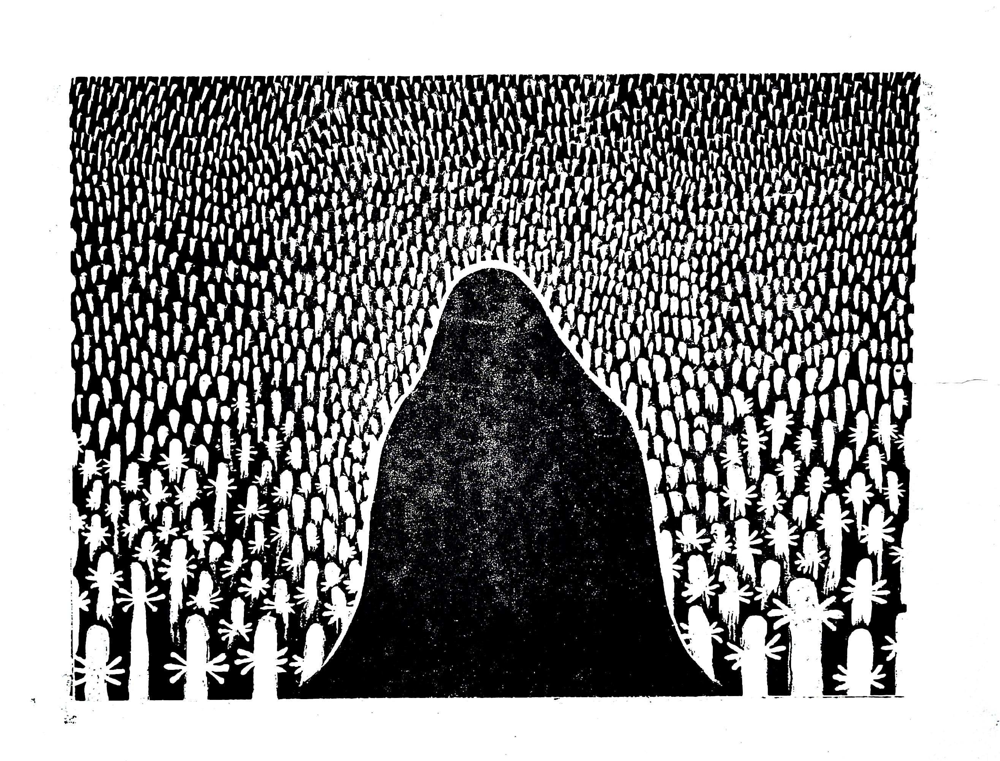
Mitt aller første tresnitt: "Hufsa"
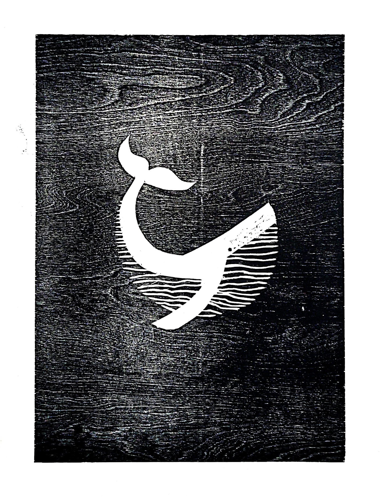
"Knøl"
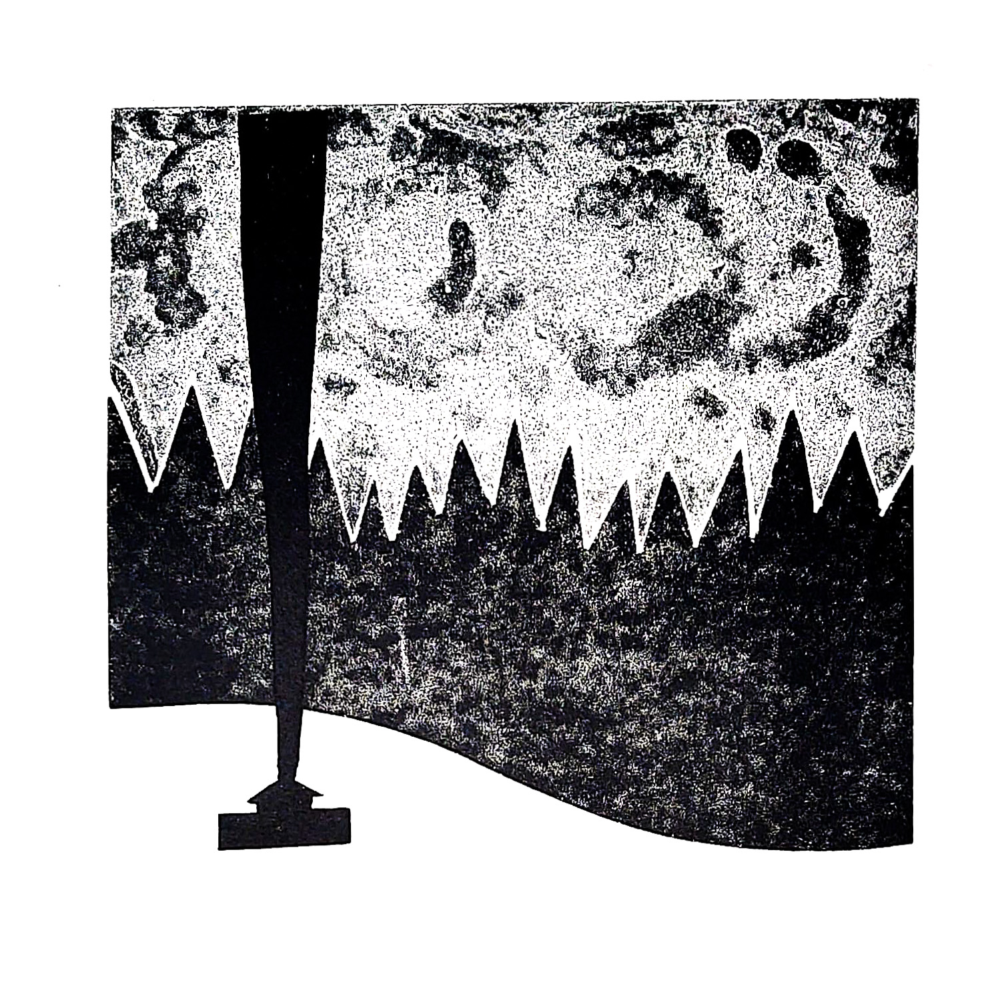
"Hytta"
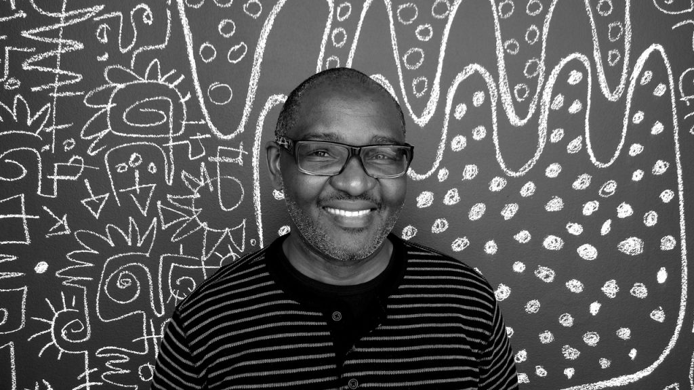
Etter en omgående inspirasjonsjakt på Pinterest, fant jeg min inspirasjonskilde:
Victor Ekpuk (Bilde: OPTG)
er en nigeriansk-amerikansk kunstner med en karakteristisk stil som jeg lot meg inspirere av. Det resulterte i en
serie med afrikanske dyr. (Jeg skal erkjenne at jeg trykte bildene før jeg fastslo hvilket dyr de representerte.
Så det meget forstålig om du gjør opp din egen tolkning av bildene.)
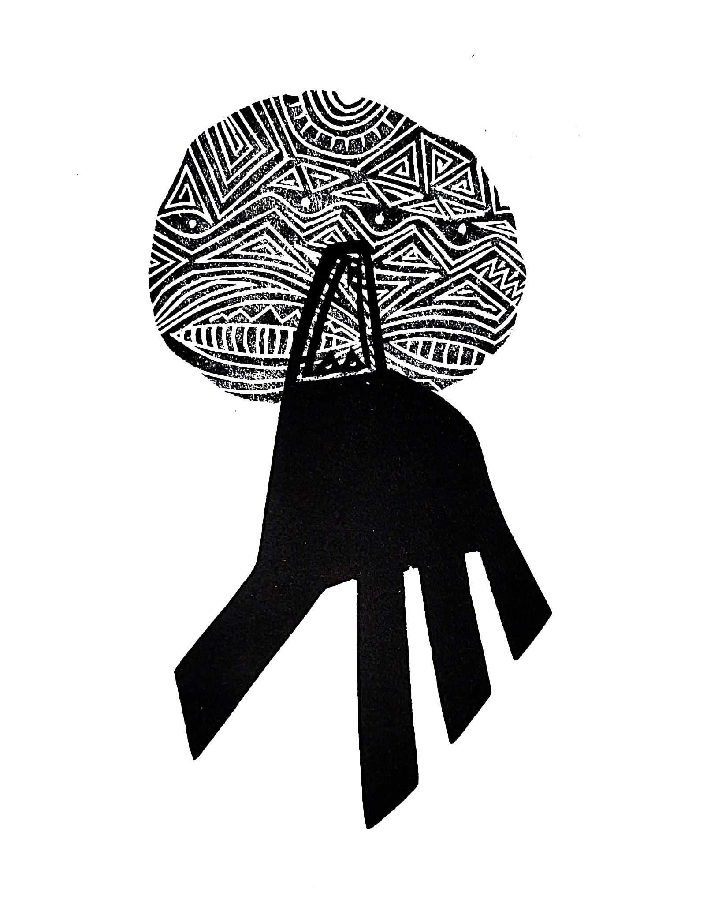
"Løve"
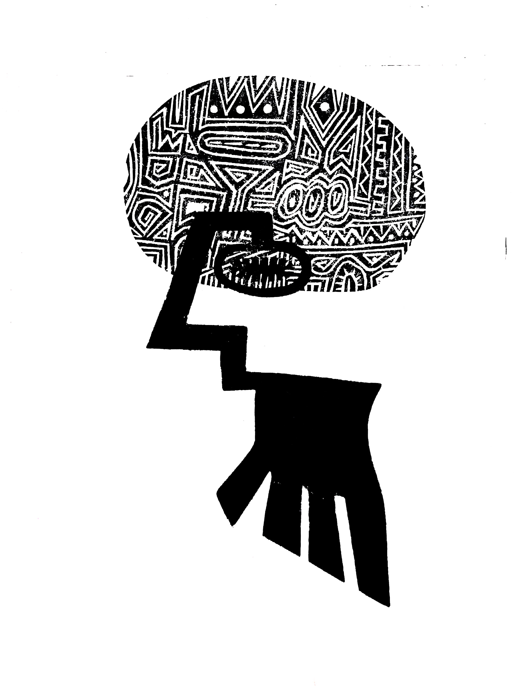
"Giraff"
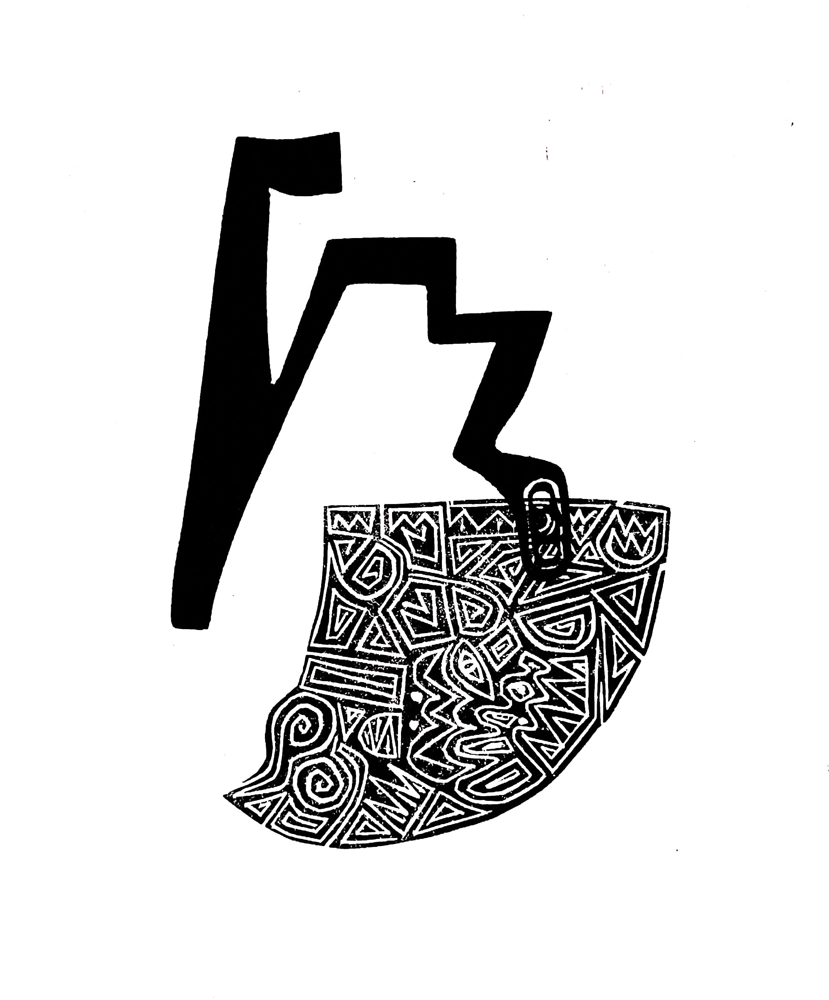
"Serpent"
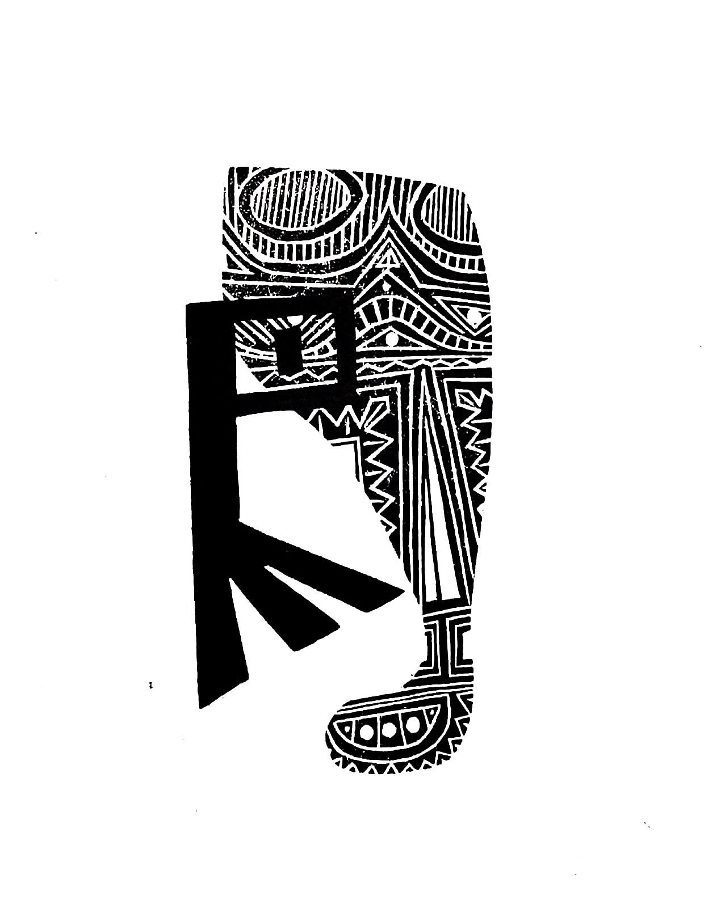
"Surikat" (Du vet, som Timon i Løvenes konge)
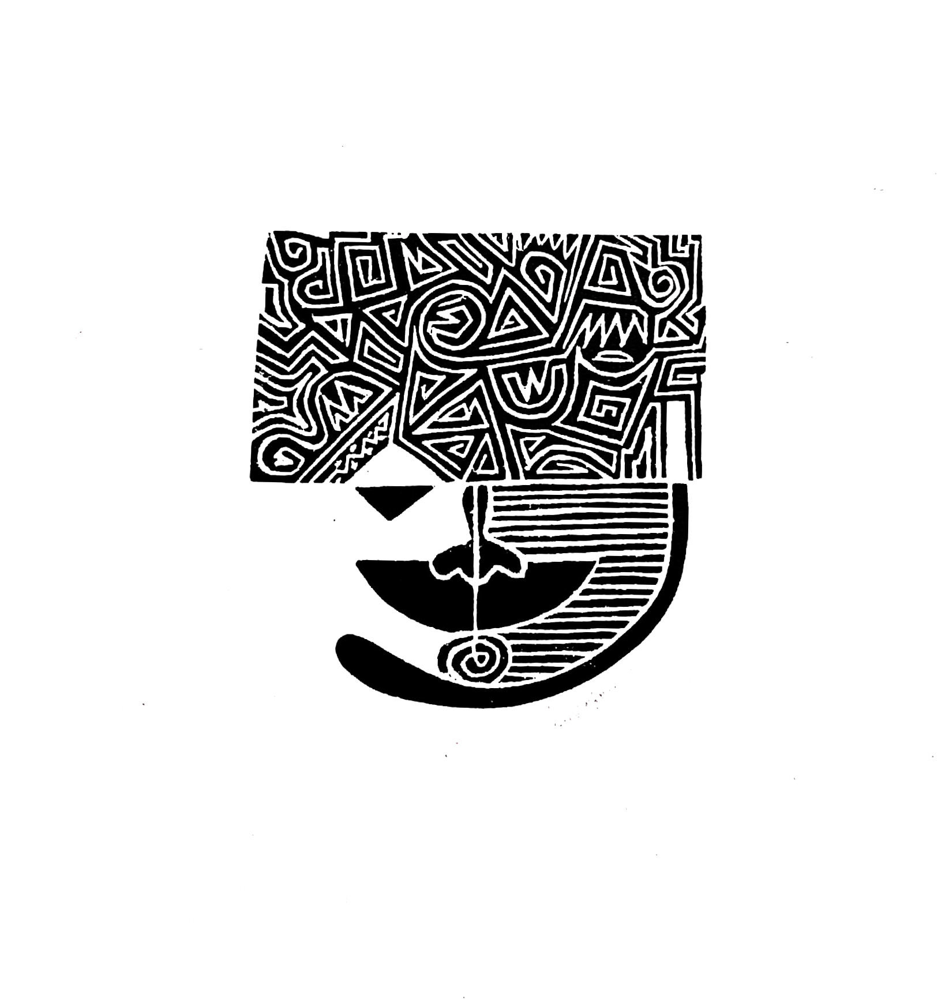
"Sapiens"
I nyere prosjekt har jeg til og med dristet meg til å bruke litt farger.
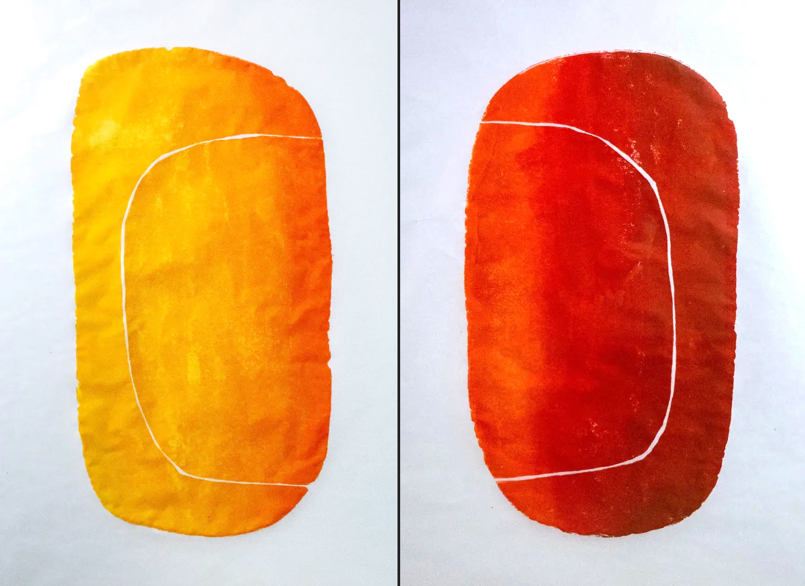
"Aust" + "Vest"
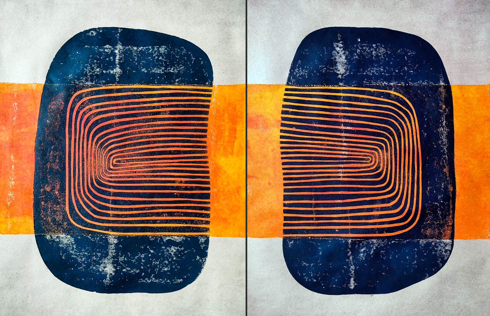
"Ringvirkninger" + "Virkningsringer"